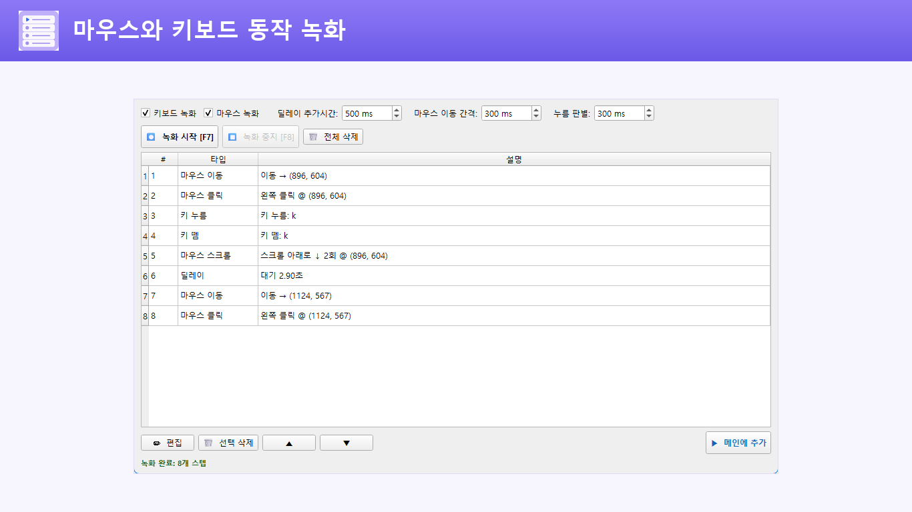
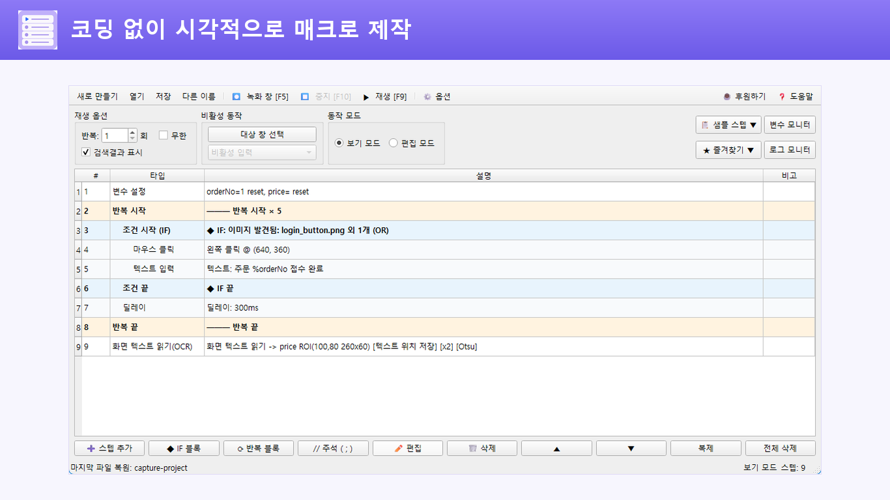
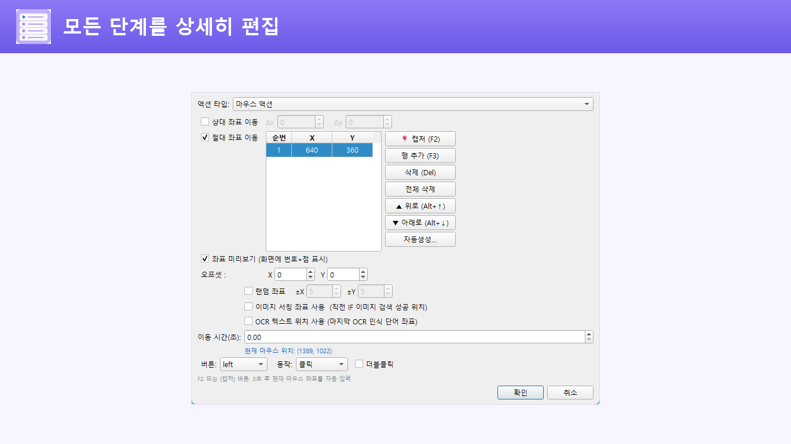
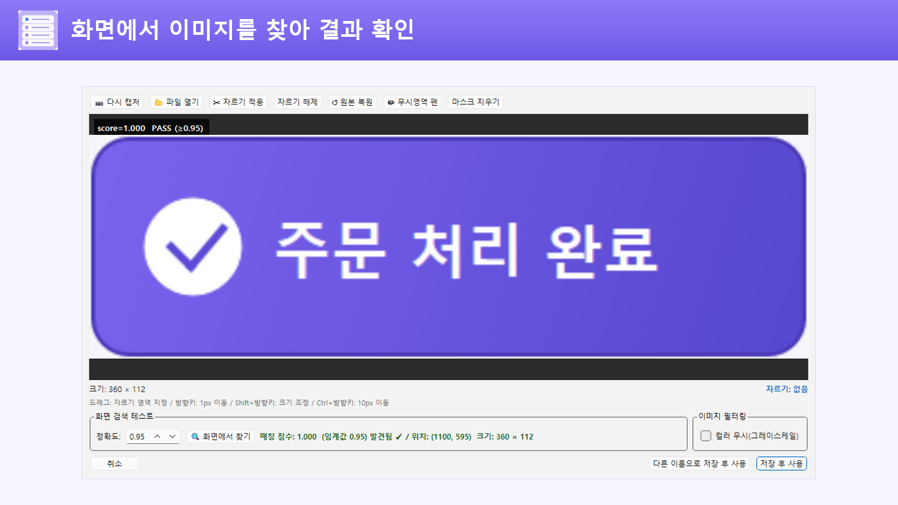
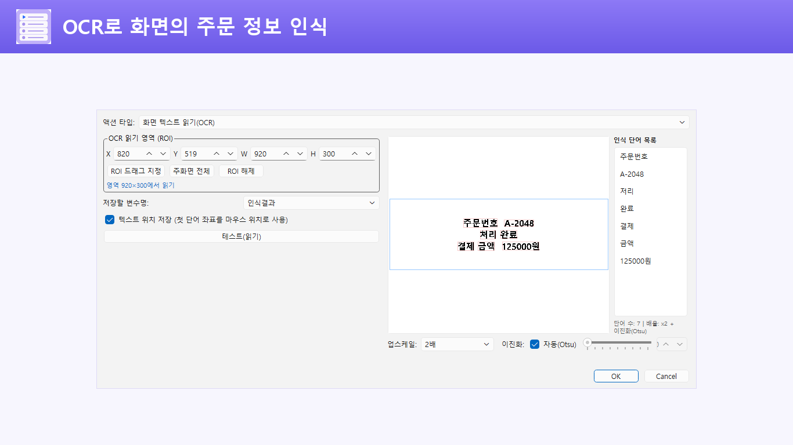

01 · 녹화와 편집
하던 동작을 녹화하고,
순서를 편집하세요.
마우스와 키보드 동작을 기록해 스텝으로 바꿉니다. 필요한 동작을 직접 추가하거나, 녹화한 순서와 대기 시간을 조정할 수도 있습니다.
- 클릭, 더블클릭, 드래그와 스크롤
- 단일 키, 조합키와 긴 텍스트 입력
- 보기 모드와 편집 모드 분리


JP's Codeless Macro Tool
마우스와 키보드 동작을 녹화하고, 필요한 순서로 다듬습니다. 조건과 반복, 이미지 검색과 OCR을 더해 내 작업에 맞는 매크로를 만들어보세요.
Windows 10 버전 1809 이상 · x64 · 인앱 결제 없음

주요 기능
처음에는 짧은 동작부터 시작하세요. 녹화한 스텝을 확인하고, 작업에 맞는 조건과 데이터를 하나씩 더할 수 있습니다.
01 · 녹화와 편집
마우스와 키보드 동작을 기록해 스텝으로 바꿉니다. 필요한 동작을 직접 추가하거나, 녹화한 순서와 대기 시간을 조정할 수도 있습니다.

02 · 작업에 맞춘 구성
마우스 좌표와 실행 옵션을 확인하고, IF·AND·OR·ELSE 조건과 중첩 반복을 조합합니다. 변수 계산과 텍스트 치환으로 매번 달라지는 입력도 구성할 수 있습니다.

지정한 창으로 입력을 보내고, 비활성 입력이 어려운 프로그램에는 호환 모드를 사용할 수 있습니다. 프로그램 구조와 권한에 따라 지원 범위가 달라집니다.
백그라운드 입력 가이드변수 모니터와 로그 모니터에서 현재 값, 클릭 좌표, 입력 내용과 조건 판정 결과를 확인합니다. 전역 단축키로 시작하고 즉시 중지할 수 있습니다.
한국어, English, 日本語, 简体中文, 繁體中文, Español, Português (Brasil), Deutsch, Français 등 9개 언어를 지원합니다. 원하는 언어를 고르거나 Windows 표시 언어에 맞춰 자동 선택할 수 있습니다.
이미지 검색과 OCR
지정한 이미지를 찾거나 화면의 텍스트를 읽어 변수에 저장합니다. 인식한 단어의 위치를 다음 클릭 좌표로 사용할 수도 있습니다.


작업별 프로젝트를 만들고 저장할 파일을 준비합니다.
실제 동작을 녹화하거나 필요한 스텝을 하나씩 추가합니다.
좌표와 대기 시간을 확인하고 조건, 반복, 변수와 화면 인식을 필요한 만큼 조합합니다.
대상 프로그램을 준비하고 짧게 실행해 결과를 확인하세요. 일반 재생은 실제 마우스와 키보드를 조작하므로, 예상과 다르게 동작하면 중지하세요.
반복, 조건, 포인터 구조와 누락된 이미지, 대상 창 설정을 검사합니다. 검사에서 문제가 발견되면 실제 입력 전에 중단합니다.
기존 프로젝트를 덮어쓸 때 직전 정상본을 자동 보관합니다. 여러 시점의 변경 이력을 모두 보관하는 방식은 아닙니다.
실행 스텝, 반복 횟수와 전체 시간에 안전 한도를 적용하고, 민감한 입력값을 남기지 않는 실행 기록을 제공합니다.
자동화 스텝과 프로젝트 파일은 사용자의 PC에서 관리합니다. 모든 기능은 무료이며 인앱 결제가 없습니다.
JP's Codeless Macro Tool